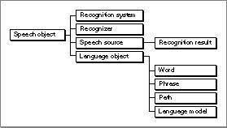

Speech Objects
The Speech Recognition Manager is object oriented in the sense that many of its capabilities are accessed by creating and manipulating speech objects. A speech object is an instance of a speech class, which defines a set of properties for objects in the class. The behavior of a speech object is determined by the set of properties associated with the object's class. Here are the basic type definitions for speech objects:typedef struct OpaqueSRSpeechObject*SRSpeechObject; typedef SRSpeechObject SRRecognitionSystem; typedef SRSpeechObject SRRecognizer; typedef SRSpeechObject SRSpeechSource; typedef SRSpeechObject SRLanguageObject; typedef SRSpeechSource SRRecognitionResult;As these definitions make clear, all speech classes are arranged in the speech class hierarchy, a hierarchical structure that provides for inheritance and overriding of class data and methods. Figure 1-2 shows the speech class hierarchy.Figure 1-2 The speech class hierarchy

As you can see, words, phrases, paths, and language models are all subclasses of the language object class. In addition, language objects, recognition systems, recognizers, and recognition results are all subclasses of the speech object class.
This hierarchy is useful for determining which Speech Recognition Manager routines operate on which types of objects. A function that takes a parameter of type
SRSpeechObjectcan operate on an object located anywhere in this hierarchy, because all speech classes are derived from theSRSpeechObjectclass. (So, for example, you can use theSRGetPropertyfunction to get a property of a recognizer, a recognition system, a word, a phrase, and so on.) A function that takes a parameter of typeSRLanguageObjectcan operate on any language object.Object References
You access a speech object by using an object reference (or, more briefly, a reference). You obtain a reference whenever you create an object (for instance, by calling theSRNewWordfunction) or whenever you retrieve an object (for instance, by calling theSRGetIndexedItemfunction). A reference is essentially a tag for some private information maintained internally by the Speech Recognition Manager. The Speech Recognition Manager allocates space (usually in the system heap) for that information when you first create an object and returns a reference for that object to your application. You can dispose of that memory only indirectly, by callingSRReleaseObjectto release an object.It's possible to have more than one reference to a speech object. (For example, if you call the
SRGetIndexedItemroutine twice on the same speech object with the same index, you'll be given two different references to the same speech object.) For each speech object, the Speech Recognition Manager maintains a reference count (that is, the number of references that exist to that object).Certain operations on a speech object increase its reference count, and other operations decrease it. When you first create a speech object (by calling a function beginning
SRNew), its reference count is set to 1. When you retrieve an object (by calling a function beginningSRGet), the object's reference count is incremented by 1. When you release an object, the object's reference count is decremented by 1. If the reference count of an object becomes 0, the memory occupied by that object is disposed of.
- IMPORTANT
- You must balance every function call that creates an object reference with a call to the
SRReleaseObjectfunction when you are finished using that reference. Failure to do so will result in a memory leak. Every call to a function of the formSRNewObjectorSRGetObjectthat successfully returns an object reference must be balanced by a call toSRReleaseObject.
Object Properties
Each type of speech object has one or more properties associated with it that control some of the object's behavior. For instance, a word has a spelling property that indicates how the word is spelled. A property is just an item of data associated with an object; this item of data has both a property type and a property value.The property types associated with an object depend on the location of that object in the speech class hierarchy. Every language object (that is, every instance of any subclass of the
SRLanguageObjectclass) shares a number of properties, including properties that determine the spelling of the object, an application-defined reference constant for the object, and whether the object can meaningfully be repeated by the user. By contrast, a recognition system is not a language object and hence has no spelling property. Instead, recognition systems have other properties (for instance, the feedback and listening modes property mentioned later in the next section).You can get or set a specific property of an object by calling the
SRGetPropertyandSRSetPropertyfunctions. You indicate the object of which you want to get or set a property by passing an object reference. You indicate which property of that object you want to get or set by passing a property selector. For instance, the following lines of code set a word's reference constant property to a specified value./* suppose that the word myWord has already been created */ unsigned long myVal; OSErr myErr; myVal = 3; myErr = SRSetProperty(myWord, kSRRefCon, &myVal, sizeof(myVal));The constantkSRRefConis a property selector for the reference constant property of a language object. As shown later (in "Building a Language Model" on page 1-18 and "Interpreting Recognition Results" on page 1-31), you'll probably use a language object's reference constant property to help you interpret the data passed to you in a recognition result. In general, all properties of an object have reasonable default values.See "Recognition System Properties" on page 1-37, "Recognizer Properties" on page 1-40, "Recognition Result Properties" on page 1-46, and "Language Object Properties" on page 1-47 for a description of the properties defined by the Speech Recognition Manager.